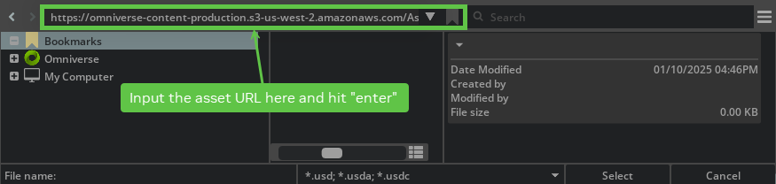

Known Issues#
General#
On some Windows systems, you may encounter an error like the following:
OSError: [WinError 126] The specified module could not be found. Error loading "C:\path\to\omni.isaac.ml_archive\pip_prebundle\torch\lib\fbgemm.dll" or one of its dependencies.
This issue is caused by missing build tools. To resolve it, install Visual Studio 2022 and then install
MSVC v143 - VS 2022 c++ x64/86 build toolsthrough the Visual Studio interface.The replicator Scatter3D OmniGraph node breaks physics when called on a stage using world.
If running NVIDIA Isaac Sim headless connected via the remote client and you exit on shutdown, the following error can occur, it can be ignored:
[ext: omni.physx] shutdown Fatal Python error: Segmentation fault Thread 0x00007f46f8faa740 (most recent call first): File "..._build/target-deps/kit_sdk_release/_build/linux-x86_64/release/extsPhysics/omni.physx/omni/physx/scripts/extension.py", line 30 in on_shutdown File "..._build/target-deps/kit_sdk_release/_build/linux-x86_64/release/plugins/bindings-python/omni/ext/impl/_internal.py", line 225 in shutdown_all File "..._build/target-deps/kit_sdk_release/_build/linux-x86_64/release/plugins/bindings-python/omni/ext/impl/_internal.py", line 261 in shutdown_all_extensions File "..._build/target-deps/kit_sdk_release/_build/linux-x86_64/release", line 3 in <module>
When running in a windowed container, the following errors may be ignored and the app continues to run after waiting for awhile:
ERROR: Could not find a version that satisfies the requirement psutil (from versions: none) ERROR: No matching distribution found for psutil WARNING: Retrying (Retry(total=4, connect=None, read=None, redirect=None, status=None)) after connection broken by 'NewConnectionError('<pip._vendor.urllib3.connection.VerifiedHTTPSConnection object at 0x7fcdcc284dd8>: Failed to establish a new connection: [Errno -3] Temporary failure in name resolution',)': /simple/psutil/``
If exiting standalone Python scripts with
Ctrl-C, it may need to be done twice to exit.If more than one asset in URDF contains the same material name, only one material is created. Regardless if the parameters in the material are different. For example, if two meshes have materials with the name “material”, one is blue and the other is red, both meshes will be either red or blue. This also applies for textured materials.
MJCF importer does not show the built-in bookmark in the file picker dialog. The bookmark is still available in the content pane and can be copy-pasted into the file picker dialog.
If you see a black screen when running on Windows, use the
--vulkancommand-line argument during startup.Debug Visualizations are not present in fisheye lens cameras that are not pinhole, because that feature is not implemented.
Assigning a viewport resolution that exceeds the available VRAM results in the application throwing
ERROR_OUT_OF_DEVICE_MEMORYerrors. Subsequently, reducing the resolution to a smaller value may lead to a crash.When using
WorldorSimulationContextfromisaacsim.core.apiwith OmniGraph, make sure the graphs are created before the World or SimulationContext are initialized.Using replicator’s
rep.new_layer()functionality, which creates a new layer in which to place and randomize assets, may lead to issues in simulation scenarios where these assets are used. In such cases the use ofrep.new_layer()can be omitted.When running through Python, selecting physics objects and then another object on screen may result in one or more
omni.kit.manupulatorerrors. This error is non-detrimental to the code execution and may be safely ignored.Dragging and dropping an asset with default values in OmniGraph nodes should be saved with scene and reloaded before hitting
Playto make sure all values are correctly set.Error on exiting ./isaac-sim.streaming.sh from UI.
[Error] [carb.livestream-rtc.plugin] nvstPushStreamData timeout for eye 0, stream 0000000000000000.
Cortex samples with ROS synchronization may perform abnormally and not be able to execute the task if the running FPS drops below 25 FPS.
If randomized materials are not loaded on time for synthetic data generation the rt_subframes must be set to be at least 2.
Some grippers with parallel mechanism (that is, Robotiq 2F-85 and 2F-C2) have links that do not move with rest of the gripper.
Multiple Robot ROS2 Navigation tutorial has high CPU usage. If you observe instances of robots colliding or experiencing localization issues, it’s likely because the Nav2 stack is unable to properly synchronize with sensor data, resulting in missed controller commands.
There can be many warnings and other messages when running Isaac Sim. The amount of log output can be reduced by using the following command line arguments:
--/log/level=error --/log/fileLogLevel=error --/log/outputStreamLevel=error
Using Replicator to write to S3 buckets with the built-in backend in Windows may require setting the credentials in the environment variables instead of the AWS config files. This is because of a possible path parsing error in boto3 on Windows.
XR extensions do not work properly on Windows.
When running standalone examples in Windows, in some scenarios, threads may not be properly cleaned up when the application is closed. This can usually be ignored because the application will still successfully close. As a workaround, you can add multiple
standalone_app.update()calls before callingstandalone_app.close().Windows fatal exception: access violation Thread 0x00000634 (most recent call first):
The ROS 2 QoS Profile OmniGraph node is unable to save custom profiles unless you manually change the createProfile input to “Custom” first before updating the other fields.
On some multi GPU systems when creating a render product the main viewport will go black, the render product will continue to work correctly
- USD to URDF Exporter:
The Collider meshes may be improperly included in the visuals. They can be manually removed from the URDF file.
The Body and Joints are authored in the URDF file in alphabetical order. They can be manually reordered in the URDF file.
Depending on the robot structure, some body names may be overriden due to the merging of different frames. Review the output and verify that it’s accurate.
The URDF exporter adds joint effort and velocity limits as inf when unbounded. This may make the URDF not import correctly if the URDF parser does not support inf values in Float.
In certain instances, prolonged execution of the ROS 2
carter_warehouse_navigation.usdsample scene or the ROS 2 Joint State publisher with thefranka.usdasset may lead to a memory leak.The Isaac Sim asset path does not work directly with the Omniverse Kit file picker dialog. As a workaround, when using an S3 asset path with the Omniverse Kit file picker, copy and paste the path and hit
enterinstead of clicking Select.
Gains produced by the gain turner may not perfectly track the robot’s commanded movements. (E.g. as seen in the Cobotta Pro robot)
URDF files links, joints, and meshes must comply with USD naming conventions to import with the URDF importer. Link names, joint names, mesh names cannot contain special characters, and cannot start with an underscore, or numbers.
When navigating assets to import, if the folder name contains a supported extension type at the end (e.g.
*.stp, *.obj, *.urdf), the asset browser will show the import options for the supported format, and a pre-import procedure may happen, which could cause an error message to appear in the log. This message can be safely ignored.Replicator synthetic data generation may require more subframes to be rendered for scenes with significant changes (e.g. moving objects or changing lighting conditions). See RT Subframes Parameter and subframes examples for more information.
Franka Open Drawer example is not able to open the drawer by default on Blackwell GPU, increase the
self._physics_rateto 600 will work correctly. The issue is currently under investigation.When running in standalone mode, the Replicator
CosmosWritermight skip generating videos from the recorded frames. In this case, run a few app updates before detaching the writer to make sure the videos will be generated.When using Replicator for synthetic data generation (SDG) workflows, it is recommended to set the DLSS model to Quality mode to avoid rendering artifacts. At lower resolutions (especially below 600x600), the default Performance mode may cause issues such as transparent or incorrectly rendered edges in the generated images.
import carb.settings # Set DLSS to Quality mode (2) for best SDG results (Options: 0 (Performance), 1 (Balanced), 2 (Quality), 3 (Auto) carb.settings.get_settings().set("/rtx/post/dlss/execMode", 2)
When using Replicator, frames may be skipped due to the
isaacsim.core.throttlingextension toggling/app/asyncRendering=Trueby default when the timeline is stopped. Since Replicator remains in STARTED mode, it does not re-initialize and toggle the setting back to False, leading to frames being skipped. To resolve this issue, launch with the following flag to disable async rendering toggling:--/exts/isaacsim.core.throttling/enable_async=false
When running SDG pipelines with Replicator in standalone mode on Windows, the first frame may be skipped by writers or the data might be missing in annotators. As a workaround, add an extra capture call (
rep.orchestrator.step()) before the SDG pipeline starts to ensure all frames are recorded correctly. See First Frame Missing in Windows Standalone Mode for details.On Windows 11, the viewport may flicker and SDG pipelines may write black images. To resolve this, update the NVIDIA display driver to version 595 or higher.
Starting in Isaac Sim 5.0, the full Isaac Sim experience (
isaacsim.exp.full.kit) enables Fixed Time Stepping by default so thatSimulationAppworkflows step the timeline deterministically. As a side effect, USD scenes that contain keyframe animations and that render below the target rate (typically 60 Hz) will appear slow or choppy in the GUI, because the timeline advances by a fixeddtper loop tick rather than by wall-clock time. The same scenes play back smoothly in USD Composer and in Isaac Sim 4.5, which use Variable stepping. To opt the GUI into Variable stepping for animation review/authoring, launch with all three of the following flags (the third prevents theisaacsim.core.throttlingextension from re-enabling manual mode on every Play); see Choppy or Slow Animation Playback (Fixed Time Stepping) for the full discussion../isaac-sim.sh \ --/app/player/useFixedTimeStepping=false \ --/app/runLoops/main/manualModeEnabled=false \ --/exts/isaacsim.core.throttling/enable_manualmode=false
Warnings#
Warnings similar to the following can be ignored:
[Warning] [omni.usd] Warning (secondary thread)[Warning] [carb.tasking.plugin] Counter 0x7f25e002f8d0[Warning] [rtx.neuraylib.plugin] [MDLC:COMPILER] 1.0 MDLC comp warn[Warning] [rtx.mdltranslator.plugin] Unable to resolve[Warning] [omni.tagging.plugin] Failed to discover tagging service[Warning] [omni.isaac.dynamic_control.plugin] DcFindArticulationDof: Function called while not simulating[Warning] [omni.isaac.dynamic_control.plugin] DcSetDofProperties: Function called while not simulating[Warning] [omni.client.plugin] Tick: authentication: Could not connect to discovery service at "wss://...
If Physics is not needed this message can be ignored:
[Warning] [omni.physx.plugin] Physics USD: Physics scene not found. A temporary default PhysicsScene prim was added automatically!
If there is unwanted noise in simulated depth images, disable anti-aliasing under the Render Settings > Ray Tracing > Anti-Aliasing tab by setting the
AlgorithmtoNone.Pyperclip is used to copy text in some extensions, if you see the following message refer to the link to install a supported copy/paste mechanism:
Pyperclip could not find a copy/paste mechanism for your system. For more information, see https://pyperclip.readthedocs.io/en/latest/index.html#not-implemented-error
If the parent prim of a joint does not correspond to body 0 then the value returned from physX will be the negation of the USD value.
If you see the following UI warning, followed by a call stack, it can be ignored:
[Warning] [omni.ui] Container::addChild attempting to add a child during a draw callback
If you see warnings similar to the following, they can be ignored:
[Warning] [omni.client.python] Detected a blocking function. This will cause hitches or hangs in the UI. Please switch to the async version
Make sure you have access to the Internet or a Nucleus server.
Errors#
Errors similar to the following can be ignored when running headless:
[Error] [carb.windowing-glfw.plugin] GLFW initialization failed.
[Error] [carb] Failed to startup plugin carb.windowing-glfw.plugin (interfaces: [carb::windowing::IGLContext v1.0],[carb::windowing::IWindowing v1.2]) (impl: carb.windowing-glfw.plugin)
[Error] [carb.scripting-python.plugin] RuntimeError: Failed to acquire interface: carb::windowing::IWindowing (pluginName: nullptr) At: /isaac-sim/kit/exts/omni.kit.window.cursor/omni/kit/window/cursor/cursor.py(27): on_startup /isaac-sim/kit/plugins/bindings-python/omni/ext/impl/_internal.py(141): _startup_ext /isaac-sim/kit/plugins/bindings-python/omni/ext/impl/_internal.py(174): startup_all_extensions_in_module /isaac-sim/kit/plugins/bindings-python/omni/ext/impl/_internal.py(225): startup_all_extensions_in_module PythonExtension.cpp::startup()(2): <module> [Error] [omni.ext.plugin] [ext: omni.kit.window.cursor-1.0.1] Failed to process python module extension in '/isaac-sim/kit/exts/omni.kit.window.cursor/.'.
These errors can be ignored while running the Omniverse Streaming Remote Client, if the client works as normal:
ERROR [BifrostClient: Streamer] {2B436200} - updateVideoSettingsForNVbProfile: profile 8 is not handled ERROR [NVST:ClientSession] {1E8D2700} - Number of channels(2) is not valid for surround configuration ERROR [NVST:ClientSession] {1E8D2700} - Either in stereo or error in receiving opus information from server ERROR [LAVCDecoder] {FC4A0700} - GERONIMO_ERROR 0xC0040006 GERONIMO_LAVCDECODER_DECODE: Packet decode failure. ERROR [GIOInterface] {DAFFD700} - GERONIMO_ERROR 0xC0020003 GERONIMO_IOINTERFACE_INVALID_AUDIO_FUNC: Audio Renderer is NULL. ERROR [NVST:ClientLibraryWrapper] {1E8D2700} - Cannot find streamEventRaised for stream.media type 1 ERROR [NVST:ClientLibraryWrapper] {1E8D2700} - Cannot find streamEventRaised for stream.media type 2 ERROR [NVST:RtspSessionPocoBase] {FB280700} - perform() failed: 0 ERROR [NVST:RtspPocoEvent] {FB280700} - RTSP-XNvEvent Polling failed: 0, rc: 408 ERROR [NVST:UdpRtpSource] {F9A7D700} - UDP RTP Source: failed to receive data (Error: 0x80000013) ERROR [NVST:RtpSourceQueue] {F9A7D700} - RtpSourceQueue: failed to read RTP packet (Result: 0X80000013) ERROR [BifrostClient: NvscWrapper] {1D0CF700} - Received old frame - current 7536 received 0 ERROR [BifrostClient: Interface] {2B436200} - nvbSendInputEvent(). SessionIdentifier is ''
ERROR [Geronimo::Analytics] {875D4140} - Failed to load dll with error: /../..//NvTelemetryAPI.so: cannot open shared object file: No such file or directory ERROR [BifrostClient: Streamer] {875D4140} - updateVideoSettingsForNVbProfile: profile 8 is not handled ERROR [NVST:ClientSession] {7EC38640} - Number of channels(2) is not valid for surround configuration ERROR [NVST:ServerControl] {4BFFF640} - Unknown server notification ERROR [GIOInterface] {49FFB640} - GERONIMO_ERROR 0xC0020003 GERONIMO_IOINTERFACE_INVALID_AUDIO_FUNC: Audio Renderer is NULL. ERROR [NVST:ClientLibraryWrapper] {7EC38640} - Cannot find streamEventRaised for stream.media type 1 ERROR [NVST:ClientLibraryWrapper] {7EC38640} - Cannot find streamEventRaised for stream.media type 2 [h264 @ 0x55580065b160] Cannot parallelize slice decoding with deblocking filter type 1, decoding such frames in sequential order To parallelize slice decoding you need video encoded with disable_deblocking_filter_idc set to 2 (deblock only edges that do not cross slices). Setting the flags2 libavcodec option to +fast (-flags2 +fast) will disable deblocking across slices and enable parallel slice decoding but will generate non-standard-compliant output. ERROR [BifrostClient: Streamer] {875D4140} - Sending Input event failed: Nvsc Error: NVST_R_GENERIC_ERROR (0x800b0000)
Error similar to the following happens when STOPPING and STARTING simulation again when using Isaac core world class. To stop the error trail, Reset the scene with one of the
world.resetmethods (in the core samples, this happen when pressing the RESET button on the UI).2021-06-01 19:16:51 [65,842ms] [Error] [omni.kit.app._impl] [py stderr]: AttributeError: 'NoneType' object has no attribute '<...>' At: <...>
If an asset contains an Action Graph and the Action Graph window is closed before re-opening the same asset, the following errors may appear and can be ignored:
[Error] [omni.usd] TF_PYTHON_EXCEPTION (secondary thread): in TfPyConvertPythonExceptionToTfErrors at line 114 of /buildAgent/work/ca6c508eae419cf8/USD/pxr/base/tf/pyError.cpp -- Tf Python Exception [Error] [omni.kit.app.impl] [py stderr]: sys:1: RuntimeWarning: coroutine 'OmniGraphModel.__delayed_prim_changed' was never awaited RuntimeWarning: Enable tracemalloc to get the object allocation traceback [Error] [omni.graph] Invalid GraphObj object in Py_Graph in getNode
Errors when converting ShapeNet models may appear from the
omni.kit.asset_converterextension when textures for the target model are missing from the input dataset. These errors can be ignored.[Error] [omni.kit.asset_converter.impl.omni_client_wrapper] Cannot copy from */images/texture2.jpg to */textures/texture2.jpg, error code: Result.ERROR_NOT_FOUND.
Errors when livestreaming. These errors can be ignored.
[Error] [carb.livestream.plugin] nvstPushStreamData timeout for eye 0, stream (nil). [Error] [omni.kit.livestream.webrtc.plugin] NVST Error: NVST_R_FRAME_DROPPED [Error] [omni.kit.livestream.webrtc.plugin] NVST Error: NVST_R_BUSY
If the stream remains connected and interactive, these messages do not require action.
NVST_R_BUSYcan appear while disconnecting one WebRTC client and reconnecting another; close the existing client session or reload the browser-based viewer before reconnecting.Errors when using a Jupyter notebook. These errors can be ignored.
[Error] [omni.kit.app.plugin] Can`t delay app ready event, it was already sent. Requester name: omni.usd
Errors while generating samples with
flying_things_4d.yamlfor larger value of--num-scenes(specially when running for stress test):[Error] [omni.physicsschema.plugin] Rigid Body of (/Replicator/SampledAssets/Population_9658d6d1/Ref_Xform_05/Ref) missing xformstack reset when child of rigid body (/Replicator/SampledAssets/Population_9658d6d1/Ref_Xform_05) in hierarchy. Simulation of multiple RigidBodyAPIs in a hierarchy will cause unpredicted results. Please fix the hierarchy or use XformStack reset.
Error like this when running Composer can be ignored.
[Error] [omni.graph.core.plugin] /Replicator/SDGPipeline/OgnSampleCombine_03: [/Replicator/SDGPipeline] Assertion raised in compute - AttributeData 'OgnSampleCombine_03.outputs:samples' of type 'float3[]' required array of elements of length 3, got array with elements of size 1
When using the surface gripper between two objects that contain articulation root, the following error may appear and the surface Gripper won’t work. To avoid it, disable the Articulation API from the picked object.
[Error] [omni.physx.plugin] PhysX error: PxD6JointCreate: actors must be different
Fatal error regarding
omni.sensorsplugin when running RTX Radar. Unless you have manually disabled Vulkan and MotionBVH, this error appears if you are using a below-minimum-spec GPU. Your GPU must be Ampere architecture or newer.[Warning] [omni.sensors.nv.radar.wpm_dmatapprox.plugin] MotionBVH activation state 0 doesn\'t match requested state 1 [Fatal] [omni.sensors.nv.radar.wpm_dmatapprox.plugin] Running radar without MotionBVH is disallowed, to force it use --/app/sensors/nv/radar/runWithoutMBVH=true If you are running on Windows and have motionBVH enabled, be sure to enable Vulkan as well by passing --vulkan
Error regarding failure to process writer attach request when playing scene containing an OmniGraph, after changing timeCodesPerSecond setting. To resolve, save the scene, reopen it, then play it again.
[Error] [omni.graph] Invalid Node object passed to Graph.get_graph_from_node [Error] [isaacsim.core.nodes.impl.base_writer_node] Could not process writer attach request (<omni.replicator.core.scripts.writers.NodeWriter object at 0x7355b3d175b0>, None), Invalid NodeObj object in Py_Node in getAttributes
In
omni.replicator.object, the description filedemo_shader_attributes_diffuse.yamlcan have a corrupted JPEG error that the picture is not written before it’s used. We are looking into fixing it.[Error] [gpu.foundation.plugin] Couldn\'t process /tmp/carb.F3srY8/randomized_output.jpg, it might not have written completely. Reason: Failed to load image: Corrupt JPEG
omni.usd LoadModule errors can be ignored.
[Error] [omni.usd] USD_MDL: in LoadModule ...
WinError 123 errors similar to below may appear when clicking an asset in the Isaac Sim Asset Browser. These errors can be ignored.
[WinError 123] The filename, directory name, or volume label syntax is incorrect: `https://omniverse-content-production.s3-us-west-2.amazonaws.com/Assets/Isaac/4.5/Isaac/Environments/Simple_Warehouse/full_warehouse.usd`
Following errors can be ignored when running ROS 2 Navigation and ROS_Nav2_Waypoint_Follower ActionGraph. These errors occur when starting and stopping simulation without ticking the impulse node inside the ROS_Nav2_Waypoint_Follower ActionGraph. The prim attribute for OrientReadPrimAttribute and TranslateReadPrimAttribute nodes will be set after ticking this graph.
[Error] [omni.graph.core.plugin] /Graph/ROS_Nav2_Waypoint_Follower/OrientReadPrimAttribute: [/Graph/ROS_Nav2_Waypoint_Follower] Prim has not been set [Error] [omni.graph.core.plugin] /Graph/ROS_Nav2_Waypoint_Follower/TranslateReadPrimAttribute: [/Graph/ROS_Nav2_Waypoint_Follower] Prim has not been set
If you are encountering any issues regarding the dependencies on
omni.replicator.characteroromni.replicator.agent, the extension is now renamed toisaacsim.replicator.agent. Revise your code accordingly.When
aux_output_levelis set on an RTX sensor authoring class (isaacsim.sensors.experimental.rtx.Lidar,isaacsim.sensors.experimental.rtx.Radar, orisaacsim.sensors.experimental.rtx.Acoustic), the following warning may appear in the log. This is harmless — theusdrtFabric cache does not mirrorVtArray<std::string>attributes, but the attribute is correctly set on the USD prim and read by the Replicator pipeline.[Warning] [usdrt.population.plugin] [UsdNoticeHandler] Unhandled attribute type VtArray<std::string> (prim attribute: _replicator:rendervar:GenericModelOutput:channels)
CUDA driver failures from the
omni.sensors.nv.lidar.lidar_core.plugin(example below) on Ubuntu may be due to a system-level CUDA installation mismatch with theomni.sensorsruntime-compiled libraries.[Error] [omni.sensors.nv.lidar.lidar_core.plugin] CUDA Driver CALL FAILED at line 522: the provided PTX was compiled with an unsupported toolchain. [Error] [omni.sensors.nv.lidar.lidar_core.plugin] CUDA Driver CALL FAILED at line 548: named symbol not found
One workaround may be to set the
LD_LIBRARY_PATHenviroment variable as follows, where</path/to/isaac_sim_installation>should be replaced with the path to your local Isaac Sim installation.export LD_LIBRARY_PATH=</path/to/isaac_sim_installation>/extscache/omni.sensors.nv.common-2.5.0-coreapi+lx64.r.cp310/bin:$LD_LIBRARY_PATH
Physics Inspector “failed to find internal joint” errors for robots with mimic joints does not affect the functionality of the mimic joints and can be ignored.
[Error] [omni.physx.plugin] Usd Physics: failed to find internal joint object for PhysxMimicJointAPI at /Franka/panda_hand/panda_finger_joint2. Please ensure that the prim is a supported joint type and is part of an articulation.
The
omni.kit.telemetryextension startup error with code(error = 206)on Windows is caused by a file path exceeding the length limit. Verify that the file path ofomni.telemetry.transmitter.exedoes not exceed 260 characters.If you encounter the error message
Windows fatal exception: int divide by zeroonce the app is started, it could be due to GPU overclocking software such as MSI Afterburner. Try disabling the software to resolve the issue.”Python errors related to
tkinterlike the following indicate the user is attempting to usetkinterwith the Python distribution shipped with Isaac Sim. This is not supported.File "/path/to/isaac_sim/installation/kit/python/lib/python3.11/tkinter/__init__.py", line 38, in <module> import _tkinter # If this fails your Python may not be configured for Tk ^^^^^^^^^^^^^^^ ModuleNotFoundError: No module named '_tkinter'
Error when using depth sensor AOVs. The AOV number (eg. 38 below) may change, depending on the selected AOV.
[Error] [rtx.postprocessing.plugin] DepthSensor: Texture sizes do not match: inColorTexDesc 1920x1080x1:11@0 inDepthTexDesc 1500x843x1:33@0 [Error] [rtx.postprocessing.plugin] DepthSensor: Failed to allocate view resources for view 1 device 0 [Error] [carb.scenerenderer-rtx.plugin] Failed to export AOV 38 to render product. The renderer did not generate the AOV texture
Hang#
On windows, when using the extension manager, clicking on the dependencies window will cause the viewport to go black and hang.
The WebRTC Client on Firefox may appear to hang after a few seconds when clicking the Play button. Using the Google Chrome or Chromium browser is recommended.
Isaac Sim may hang if a browser pop-up for logging into Nucleus is closed before completing the login. Force restart of Isaac Sim is required.
Crash#
Using compound nodes in OmniGraph may lead to a crash, we do not recommend using compound nodes in OmniGraph.
Shutting down the physics.tensors extension before the Python garbage collector cleans up the related objects can lead to a crash. To prevent this, manually set the related tensor API objects in Python to None before unloading the extension.
On multi-GPU (MGPU) systems, using RTX Lidar can sometimes cause a fatal application crash with CUDA error 700 messages in the log. As a workaround, launch Isaac Sim with multi-GPU rendering disabled:
./isaac-sim.sh --/renderer/multiGpu/enabled=false
See Multi-GPU for other multi-GPU settings.